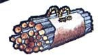
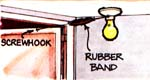
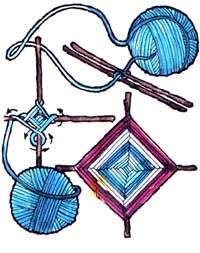
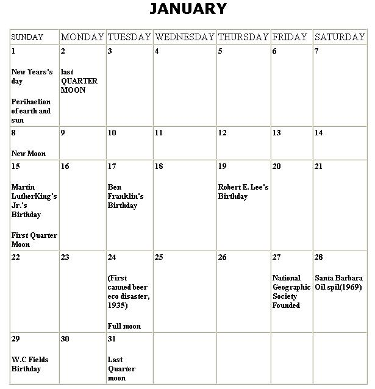
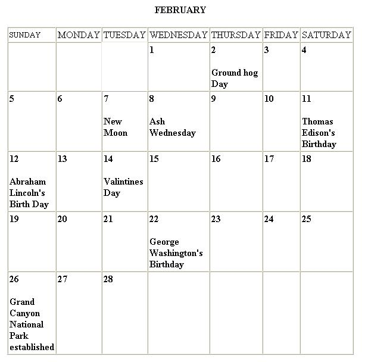

It's hard to estimate the quarts of paint thinner and other liquids that are spilled in this country every year ... merely because not one person in ten knows the simple trick of "starting" those flat, gallon cans with the off-center, screw-on lids.
The secret is to hold the container's opening UP as you pour off the first quarter or so of the can's contents. This allows air to enter as the fluid comes out ... thereby eliminating all the messy glugging" and dribbling.
No matter how many mousetraps you keep around the house, there's always a time when you could use at least one more of the devices ... especially during the months when the little rodents come indoors to escape the cold. So here's yet another means for protecting your pantry.
Merely take an old dinner plate, a bowl (about a one-quart size), and a thimble filled with toasted cheese, peanut butter, or any other mice-enticing goodie. Arrange the equipment as shown in the drawing, balancing the bowl on the thimble.
When the critter nibbles on the cheese, the bowl will fall and make him a prisoner. You can then drop the whole shebang in a pail of water (or otherwise dispose of your unwanted visitor as you see fit).
It can be downright awkward to transport large loads of logs and kindling from your basement or yard to the woodbox in the house if you try to stack the burden in your arms. However, a handy carrier made from a full-size grain sack with rope handles attached at each end (see drawing) will help to uncomplicate the situation.
Place only enough fuel in the sling so that the handles will come together at the top, and you'll have a comfortable grip that will make the load as easy to carry as a medium-weight suitcase. Then-after you remove the wood-take the burlap outside and shake away all the dirt that you otherwise would have left in the house.
Though it's just a small inconvenience, the frustration of groping for a workshop or cellar light cord in the dark can be avoided if your room's door opens outwards. Simply connect the lamp socket's pull chain to a screwhook fastened at the top of the door near the hinges, using several rubber bands (or a light coil spring) and a cord to extend its overall length.
When the door is opened, the lamp's chain is pulled enough to turn on the bulb while the rubber bands stretch and allow the door to swing fully. The same process extinguishes the light when you again open the door to leave the room.
If the cord is connected to the screwhook with a loop or a ring, it can be easily disconnected during the day when it's not needed.
Idle hours spent indoors during the winter are always trying for youngsters, but the "Eye of God" is a very simple craft item they might enjoy making-and remaking-for entertainment. It'll help use up all those odd scraps of yarn left over from Mom's knitting, too!)
Lay about two feet of a good length of yarn (the exact total measurement, of course, depends on the size of your creation) straight out on a table. Place two sticks (twigs, pencils, or any kind of thin rods) side by side across the thread, tie a single tight knot around the middle of both, and then make a second knot over the first.
Now twist the sticks so they form a cross and begin winding both the long piece of yarn and the short leftover end (until it runs out) around one stick ...then take both strands over, under, and around the next stick to the right. Continue working in the same direction, adjusting your hold on the framework so that-as you move from one "arm" to the next-the stick that you're wrapping is always nearest you.
If you want to change colors midway through, merely tuck the yarn you're working with securely between stitches in the back. Wedge the beginning of the next color yarn under other stitches and resume the same pattern of winding.
To finally end the handicraft, just clip the yarn and hide the loose end behind the design as you did when changing colors.
Beginning cooks are usually baffled when their first cake sticks to the pan, but old hands in the kitchen solve the problem by simply dampening a cloth in hot water and wrapping it around the baking container. The steam that soon forms releases the cake with no further difficulty
The lovely poinsettia-a traditional Christmas flower and a favorite seasonal gift-is a rather finicky houseplant Though it will keep its red, pink, or white bracts (actually, only the tiny yellow centers within the colored areas are true flowers) for up to three months, it requires specialized care. And getting the plant to "bloom" as beautifully in successive years is a real challenge ... but one which can be met by any dedicated indoor gardener.
While it's in the blooming stage (shortly before and after Christmas), the poinsettia likes lots of winter sun and no drafts (either warm or cold). Water the plant thoroughly, but allow the soil to become almost completely dry before saturating it again.
Along in the spring-when its leaves begin to drop off-you'll need to cut a poinsettia's stems back drastically (to about 3"-6" in length) and repot the flower in a rich, loamy soil. Once the threat of frost has passed, place the pot outdoors in a spot where it'll get full sun. Then fertilize the plant twice a month during the spring and summer.
Since the poinsettia is a short-day plant- that is, it requires about 16 hours of darkness a day in order to set buds-you'll have to spend extra time caring for it in the fall. During the last week of September and through all of October, begin a schedule of placing the houseplant in a closet or dark corner for 16 to 18 continuous hours out of each 24-hour day. Keep the practice up until red appears on the leaves ... then set your Christmas flower out in any light and wait for the blooms to appear!
Dirt often accumulates-and when mixed with wash water, forms a hard crust-in the corners of a floor because neither your mop nor the bristles of your scrub brush will reach back into the nook.
If you'll attach a metal point to the end of the brush's handle, however, you'll find it easy to break up this hard coating and clean out the tight baseboard areas.
Looking for an inexpensive - yet original - pot for a favorite hanging plant? You can create a very neat and attractive vase by recycling a colored bottle.
Cut off the bottom of your chosen container at the desired height ... then close the opening at the neck with a cork. Wind a length of wire around the tapered part of the glass, extend it up the bottle's side, and wrap it again around the planter's "body" ending in a loop.
Rectangular-shaped decanters fitted with these hangers can be placed in interesting arrangements directly against a wall. Round ones, on the other hand, go nicely in a corner.
If you're thinking about building a homemade sled - and want to be able to steer it like a bobsled - give this simple idea a try.
Fashion an extra runner with a crossbar as shown in the drawing (measure carefully so that the lower edge of this runner will be either level with, or a little lower than, the sled runners when it's in place) and pivot the runner and crossbar on the end of a long "arm". Then center the extension bar underneath the front end of the sled and bolt it in place. Just make sure that the operator, when he's sitting on the sled's top, can comfortably maneuver the crossbar with his feet.
|
|
|
 |
|
|
 |
 |
|
|
|
|
|
|
 |
 |